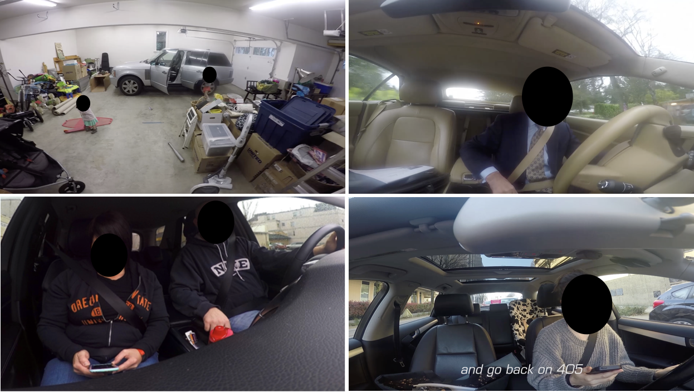
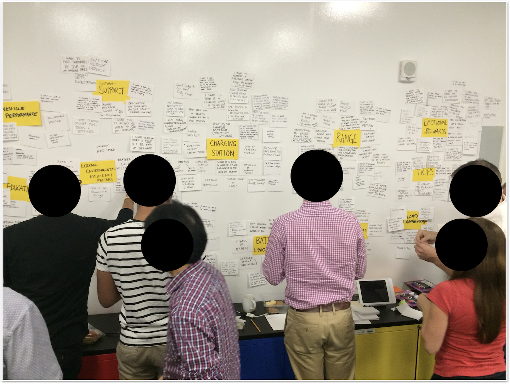
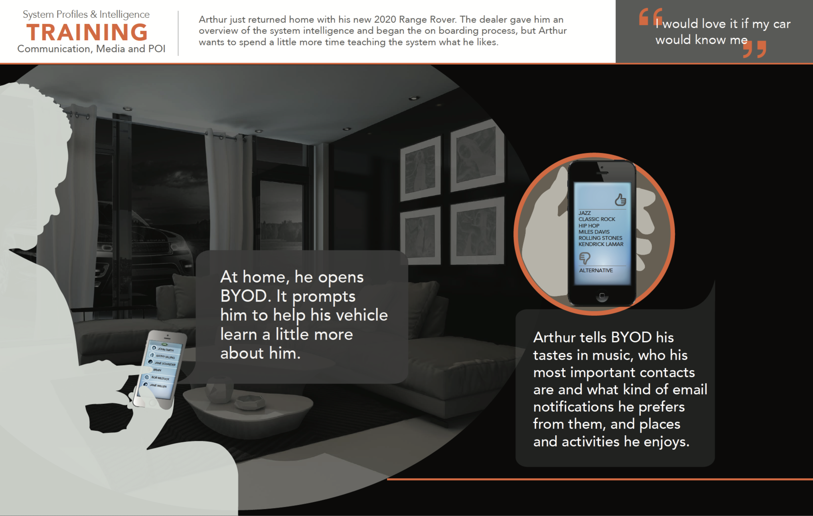
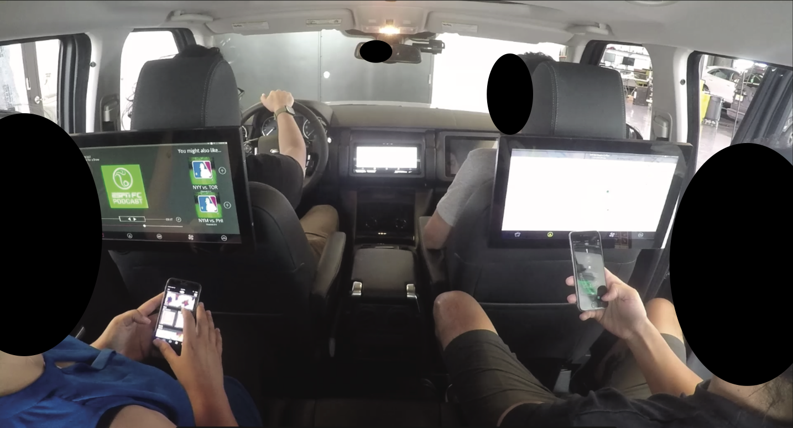
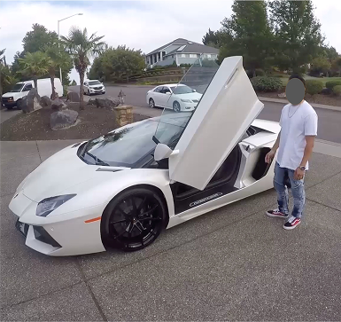
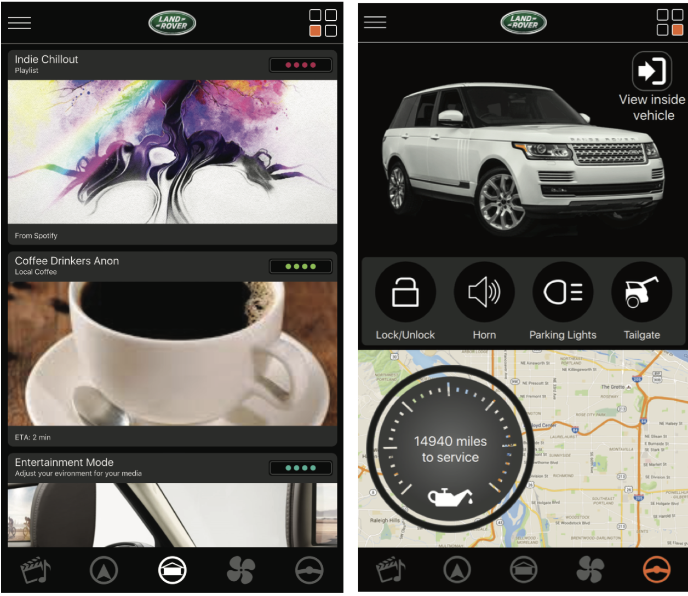

As an embedded extension of Jaguar Land Rover's innovation team, we operated on rolling 4-month cycles to shape the experience across every screen in the car — touchscreen, cluster, HUD, and smartphone — and determine how they might integrate into vehicles 3–5 years out.
Processes: ethnographic research, video diary synthesis, storyboarding, usability testing, occlusion testing, 3D animation
We pioneered an innovation pipeline anchored in real user behavior that JLR adopted across every technology evaluation cycle. Starting with users' lived experience — not business directives or assumed needs — product features had a direct line from the users' daily commute to the assembly line.
See UX Process TheoryParticipants were given GoPro cameras to narrate and record their daily routines in their vehicles. Hours of raw footage were distilled into curated highlight reels — structured around key behavioral themes and pain points. These highlight reels became a shared reference point across the organization, aligning stakeholders around the visceral, first-hand witnessing of user painpoints.
"The most valuable insights weren't what participants said they wanted — they were the small frustrations and unconscious workarounds they didn't realize they were doing."

Two-day workshops modeled on Stanford d.school methodology brought together stakeholders around the raw research. Engineers, product leads, and designers worked together to produce high-level usage storyboards that became the foundation for all subsequent design and prototyping work.

Translated storyboards into detailed use case maps — from wireframes through high-fidelity designs to interactive prototypes.

JLR engineers built our designs directly into vehicle hardware. We then ran occlusion-goggle studies to measure eyes-off-road time and validate that safety-critical interactions met performance thresholds. The most promising concepts were integrated into their production roadmap.


Understanding what experience luxury car owners are looking for in their vehicle's infotainment system.

Determine the experience of the phone in the vehicle. How should the smartphone integrate with the vehicle's touchscreen?
To what extent should augmented reality be incorporated into the HUD experience while driving? Exploring the role and boundaries of heads-up display technology within the broader in-vehicle interaction framework.